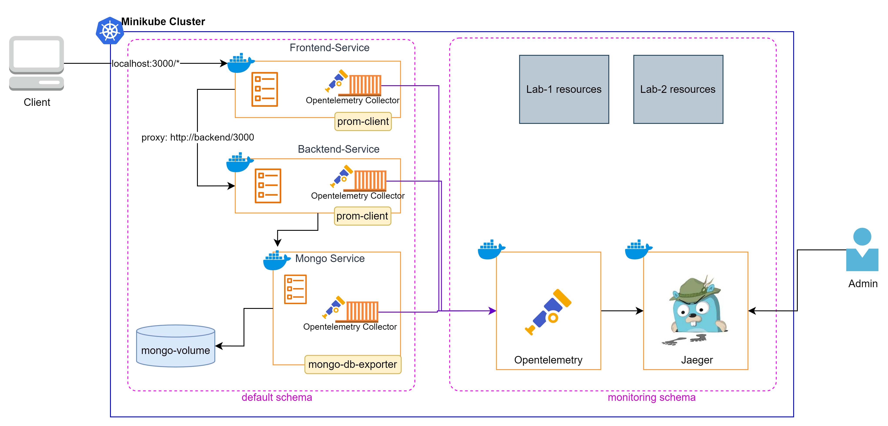

Chuẩn chung để thu thập dữ liệu quan sát (traces, metrics, logs). Đóng vai trò "người trung gian": thay vì sửa mã nguồn mỗi khi đổi công cụ theo dõi, bạn chỉ cần dùng OTel rồi gửi dữ liệu tới bất kỳ backend nào.
Đặc điểm: vendor-agnostic — gửi tới Jaeger, Prometheus hay DataDog mà không cần đổi code.
Công cụ chuyên dụng để lưu trữ, visualize và phân tích distributed traces. Giúp bạn theo dõi hành trình của một request đi qua nhiều service.
Giải quyết vấn đề: khi tính năng bị chậm/lỗi, Jaeger chỉ đích danh: "Lỗi nằm ở Service A, tại bước query Mongo, mất 1500ms".

OTel Operator dùng auto-instrumentation tự nhúng thư viện tracing vào pod (không cần sửa code). App gửi trace tới OpenTelemetry Collector, Collector chuyển tiếp sang Jaeger All-in-one để lưu và visualize.
sourcecode/section_15_monitoring_for_eks/lab3_request_tracing/.Cấu hình tracing dùng các Custom Resource Definition (CRD) như Jaeger, Instrumentation, OpenTelemetryCollector, nên cần cài Operator tương ứng trước.
Cài cert-manager (yêu cầu bởi OpenTelemetry Operator):
kubectl apply -f cert-manager.yaml
kubectl get pods -n cert-managerCài Jaeger Operator:
kubectl create namespace observability
kubectl apply -f jaeger-operator.yaml -n observability
kubectl get all -n observability
kubectl get pods -n observabilityĐợi cert-manager sẵn sàng (~1 phút) rồi cài OpenTelemetry Operator:
kubectl apply -f opentelemetry-operator.yaml
kubectl get all -n opentelemetry-operator-system
kubectl get pods -n opentelemetry-operator-systemkubectl apply -f tracing.yaml
kubectl get pods -n monitoringFile tracing.yaml triển khai Jaeger All-in-one, cấu hình Auto-Instrumentation cho Node.js và OpenTelemetry Collector.
Thêm annotation (đã có sẵn trong file todo-app-minikube-local-with-mongo-exporter.yaml của Lab 3):
# Dòng quan trọng: Inject cấu hình tracing cho Node.js
instrumentation.opentelemetry.io/inject-nodejs: "monitoring/nodejs-instrumentation"Apply và rollout lại ứng dụng:
kubectl apply -f todo-app-minikube-local-with-mongo-exporter.yaml
kubectl rollout restart deployment/backend-deployment -n default
kubectl rollout restart deployment/frontend-deployment -n default
kubectl rollout status deployment/backend-deployment -n default
kubectl rollout status deployment/frontend-deployment -n default
kubectl get pods
kubectl describe pod <pod-name> -n defaultminikube service jaeger-all-in-one-query -n monitoringfrontend hoặc backend → bấm Find Traces.monitoring.kubectl describe pod thấy init container/annotation).frontend/backend và tìm được trace khi thao tác trên app.monitoring/nodejs-instrumentation; chạy kubectl rollout restart và đợi pod mới; sinh lại request trên app.kubectl get pods -n cert-manager cho thấy cert-manager đã Running.http://otel-collector-collector.monitoring.svc.cluster.local:4318 trong tracing.yaml; xem log pod collector và jaeger.kubectl delete -f tracing.yaml
kubectl delete -f opentelemetry-operator.yaml
kubectl delete -f jaeger-operator.yaml -n observability
kubectl delete -f cert-manager.yaml